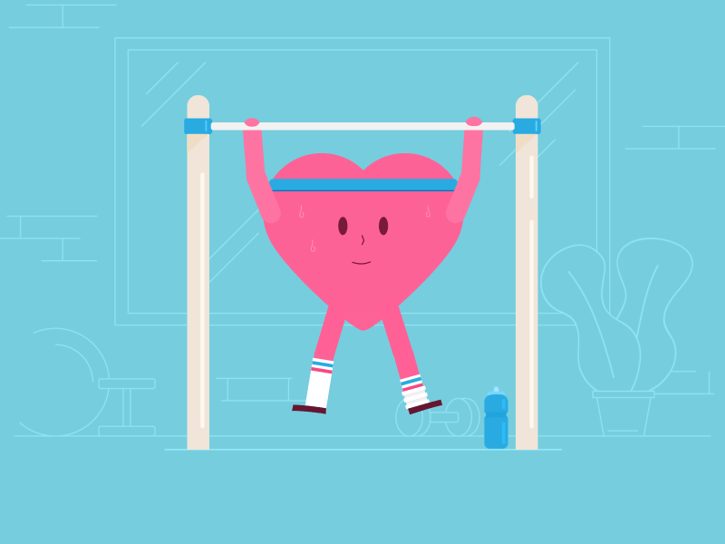

Heart Tests & Diagnosis
{% if form_not_filled %}

Hit here to know about this FORM.
{% else %} {% if result%}
... Sorry to say! You have symptoms of presence ofheart disease! ...
Here are some tips to improve your health.......
Keeping your heart healthy is something you can work on every day.
Healthy eating for a healthy heart is a pattern. It doesn’t focus on one type of food or nutrient, but rather on what you eat over days, weeks and months.
This style of eating is naturally low in saturated and trans fats, salt and added sugar. It’s rich in wholegrains, fibre, antioxidants and unsaturated fats.
- Eat more fruit and vegetables
- Swap to wholegrain
- Make healthy fat choices
- Use herbs and spices instead of salt
Doing regular physical activity reduces your risk of having a heart attack or developing heart disease. Keeping active helps to control common heart disease risk factors, including:
- High blood pressure
- High cholesterol
- Being overweight

You can reach here for more info.
{% else %}..... Hey Buddy! You are aheart healthyperson! .....
Make sure you know about some general symptoms for ....
Symptoms of heart disease in your blood vessels (atherosclerotic disease)
- Chest pain, chest tightness, chest pressure and chest discomfort (angina)
- Shortness of breath
- Pain, numbness, weakness or coldness in your legs or arms if the blood vessels in those parts of your body are narrowed
- Pain in the neck, jaw, throat, upper abdomen or back
Heart disease symptoms caused by abnormal heartbeats (heart arrhythmias)
- Fluttering in your chest, Racing heartbeat (tachycardia), Slow heartbeat (bradycardia)
- Chest pain or discomfort, Shortness of breath
- Lightheadedness, Dizziness, Fainting (syncope) or near fainting
Heart disease symptoms caused by weak heart muscle (dilated cardiomyopathy)
- Breathlessness with exertion or at rest
- Swelling of the legs, ankles and feet
- Fatigue, Irregular heartbeats that feel rapid, pounding or fluttering
- Dizziness, lightheadedness and fainting
Be healthy always!....
 {% endif %}
{% endif %}
{% endif %}
{% endif %}